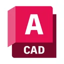

Design de Marca
Crio identidades visuais que refletem a essência e os valores de uma marca. Dos logótipos a sistemas completos, desenvolvo designs coesos que reforçam o reconhecimento e a ligação ao público.
Trago ideias, energia e design — pronto para criarmos algo incrível juntos.
Em Lisboa, disponível em todo o mundo.
Alguns dos meus projetos favoritos — de identidades de marca a interfaces e interiores.
Descobre como o meu trabalho ajuda a dar forma à tua visão.
Crio identidades visuais que refletem a essência e os valores de uma marca. Dos logótipos a sistemas completos, desenvolvo designs coesos que reforçam o reconhecimento e a ligação ao público.
Desenho experiências digitais intuitivas, focadas na clareza e na usabilidade. O meu processo junta investigação, estrutura e estética para criar interfaces funcionais e cativantes.
Aplico uma abordagem centrada nas pessoas à resolução de problemas, combinando empatia, criatividade e estratégia para gerar soluções de design inovadoras e práticas.
Desenvolvo composições visuais que comunicam com impacto e clareza, usando paginação, tipografia e imagem para reforçar a narrativa e a expressão da marca.
Exploro a relação entre espaço, forma e função, criando ambientes que equilibram estética, conforto e propósito, através de conceitos de design pensados ao pormenor.
Crio rótulos e caixas que se destacam na prateleira, juntando estrutura, tipografia e ilustração para que cada produto conte a sua história à primeira vista.


Sou o Dinis, designer em Lisboa, e transformo problemas em soluções. Da marca ao ecrã, do papel ao espaço — desenho identidades, interfaces, embalagens e interiores que funcionam tão bem como parecem.
Vê como o meu processo transforma software em resultados.

Vê como cada projeto e colaboração durante os estudos contribuiu para a minha visão do design.
Num projeto, demos de caras com um problema enorme — daqueles que deixam a sala inteira em silêncio.
Toda a equipa já sabia o que eu ia dizer. Antes que eu abrisse a boca, uma colega olhou para mim e disse, a sorrir:
“Então vamos precisar de uma grande solução!”
Desde então, é assim que encaro cada projeto: cada obstáculo é o ponto de partida para uma boa ideia.
Tens um projeto em mente? Vamos conversar — estou disponível para trabalhar em Lisboa e em qualquer parte do mundo.